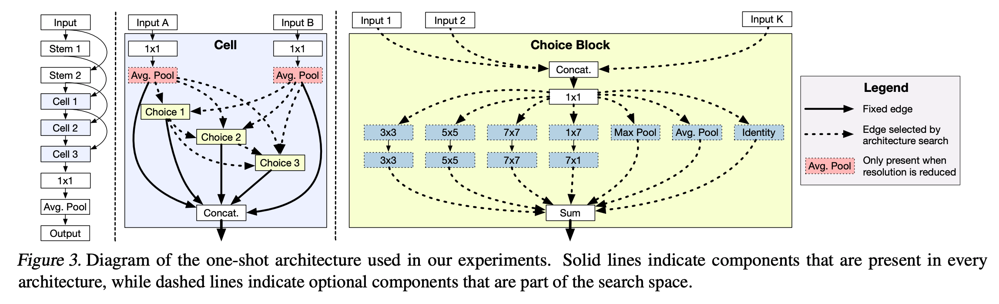
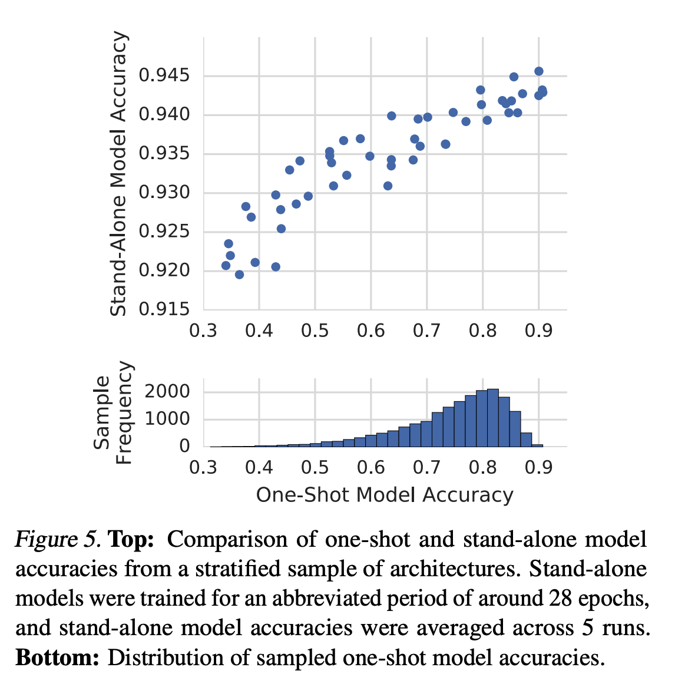
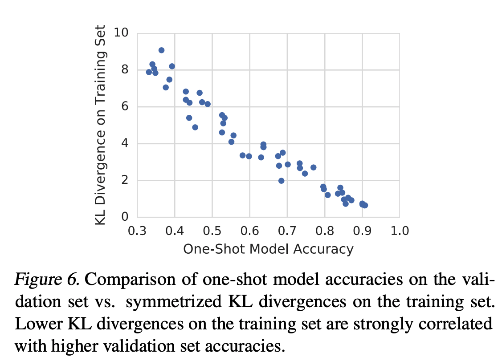
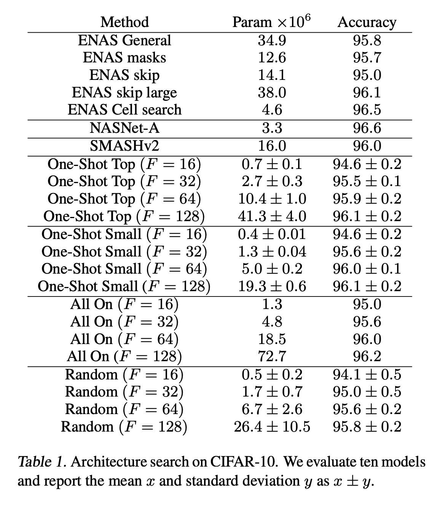

はじめに
モチベーション
one-shot architecture searchにおける重み共有について分析したい． 重み共有では構造間で重みを共有して学習を行うが， 様々な構造に対して同一の重み集合を利用してなぜ上手くいくのか．
概要
モデルはCNNを用いている． 探索空間内の操作を全て含んだone-shotモデルを学習する． これは，重み共有を用いた学習と同じである． ここで操作とは 1$\times$1conv や 3$\times$3conv，maxpool などである． 本項ではこれを large one-shot モデルと記す． 学習後の large one-shot モデルから操作のいくつかを取り除き，予測精度の変化を計測する．
以下の図のように操作を全て含んだモデルを学習する． 
先行研究との差
MorphNetはフィルタサイズを対象としている． 一方，提案手法は操作の枝狩りやスキップコネクションに焦点を当てている．
データセット
CIFAR-10とImageNetを使用．
結果
weight sharing の役割に対する洞察
構造をサンプリングして，large one-shot モデルから対応する構造を持つモデルを得る． このモデルを単に one-shot モデルと記す． サンプリングした構造を持つ，一から学習したモデルがstand-aloneモデル．
Figure5は，one-shot モデルと stand-alone モデルの精度の関係を表している． one-shot において精度の高い構造は一から学習しても精度が高くなっており，large one-shot は「構造の良さ」を学習できていると考えられる． また，one-shot における精度差と stand-alone における精度差から，large one-shot は精度への影響が大きい操作の欠落に対して敏感であると思われる．
この結果から，「重み共有は操作が性能に与える影響をモデルに識別させる役割がある」と仮定する．
上述の仮定を示すために，探索空間内のほぼ全ての操作が有効になっている構造 (参照構造) の予測分布と 一部の操作のみが有効になっている構造 (候補構造) の予測分布の間で symmetric KL-divergence を計測する． 論文ではクラス分類を対象としているためモデルの出力は確率分布とみなせる．
Figure6は，サンプリングした各構造の精度，それらの構造と参照構造との KL-divergence の関係を表している． 精度が高い構造の予測分布は参照構造の予測分布と近しくなることが確認できる． つまり，large one-shot モデルはどの操作が予測性能への影響が大きいかを学習していると考えることができる．
以上から，重み共有は操作が性能に与える影響をモデルに識別させる役割があると考える．
 
手法の性能
Table1 は提案手法 (One-Shot Top, One-Shot Small)と one-shot 学習の枠組みで捉えられる既存手法 (SMASH, ENAS)，ランダムサーチ (Random) それぞれの結果を比較したものである．
One-Shot Top はランダムにサンプリングした構造の中で large one-shot において良好な性能を示した上位 10 の構造を用いて， 最初の畳み込み層にサイズ$F$のフィルターを追加して一から学習したモデルである．
One-Shot Small はサンプリングした構造の内 large one-shot での精度が閾値を超えた構造の中で最小のパラメータ数を持つ構造を用いて， 最初の畳み込み層にサイズ$F$のフィルターを追加して一から学習したモデルである．
All On は全ての操作を含んだ構造を用いて，最初の畳み込み層にサイズ$F$のフィルターを追加して一から学習したモデルである．
Top，Small と比べると All on は精度差が1%であるが，パラメータ数は大幅に増加している． このことから，architecture search は精度への影響が弱い操作の枝狩りとみなすことができる．
提案手法は SMASH や Cell search 以外のすべての ENAS 手法と競合している． これは one-shot 学習では hypernet work や controller を必要としないことを示唆している．
